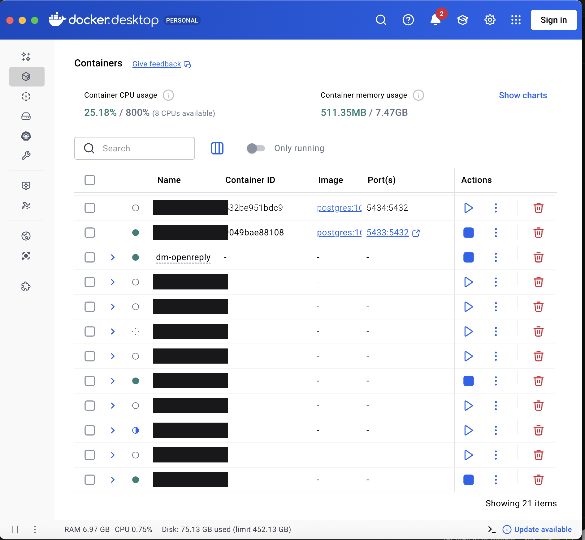

![Rajeev Kistoo]()
Set up BeyondChat
Someone comments a keyword on your Instagram post, and they get a DM with your link a second later. This gets that running on your own domain, under your own Meta app.
Do this with Claude open. Don't do it alone. Every command below, Claude runs for you — you only handle the parts that happen in a browser, where it can't click for you.
If you don't already have it set up: install VS Code, add the Claude Code extension, and open this folder in it. Step 2 below walks you through it.
Then paste this to Claude:
Read README.md and docs/setup.md, then walk me through setup.html
one step at a time. Stop and ask me whenever you need a value from me
or something only I can do in a browser.After that, talk to it normally. "It says port already in use" is a perfectly good thing to type.
That's it — it's live 🎉
Someone comments your keyword, they get your DM. You built that.
- Both terminals need to stay running, and the machine needs to stay awake
- Instagram's access expires after 60 days unless it's refreshed — ask Claude to set up the daily refresh job, or it will quietly stop working in two months
- Check DM Logs in the app any time to see what's been sent
1. Before you start
~10 minThree things you need to have. Get these wrong and you'll hit a wall three hours from now.
- Open the project page on GitHub
- Green Code button → Download ZIP
- Unzip it
- Move the unzipped folder to your home folder — the one with your name on it
Step 4 is not optional on a Mac. Your browser saves to Downloads, and macOS blocks background tasks from running there. Leave it in Downloads and this will half-work in a way that takes hours to diagnose. Same for Desktop and Documents.
Meta will only send data to an https:// address, so you need a domain. Any registrar works — around $10 a year.
You'll point a subdomain at this later, something like dm.yourdomain.com. It doesn't affect your main website.
Already have a domain with a live website? Perfect — you'll add a subdomain and nothing about the existing site changes.
A personal account cannot be used. Switching is free and takes a minute:
- Instagram app → your profile → Settings
- Account type and tools → Switch to professional account
- Pick Business or Creator — either is fine
You also need a Facebook account. Meta's developer tools sit behind one, even though none of this touches your Facebook page. If you don't have one, make it now — it's free and takes two minutes.
And you need posts. A campaign attaches to a specific post, so an account with nothing on it has nothing to test with.
You almost certainly already have a Claude account. What you need is somewhere for it to work — and for this, that's VS Code. It puts your files, a terminal and Claude in one window, so you're never hunting for anything.
- Download VS Code — free, Mac and Windows
- Open it, click Extensions in the left bar (the four-squares icon)
- Search Claude Code and install it
- Sign in with the Claude account you already have
- File → Open Folder and choose the folder you just moved

You do not need to understand the commands. You do need to read what Claude tells you and answer it honestly — especially when it asks whether something worked. Saying "yes" when you're not sure is how people lose an afternoon here.
This runs on a machine you control. While that machine is asleep or shut down, comments still arrive at Instagram but no DM goes out — and nobody tells you.
For testing, your laptop is fine. If you end up relying on it, move it to a small always-on server later.
Mac users: don't put this folder in Desktop, Documents or Downloads. macOS blocks background tasks from those folders, and it fails silently. Your home folder is fine.
You'll need a second Instagram account to test with — your own comments are ignored on purpose. A personal account works fine, or borrow a friend's phone for thirty seconds.
2. Get it running on your machine
~20 minClaude does all of this. Mostly you're just waiting for downloads to finish.
Two free installers. Docker runs the database; Node runs the app.
- Docker Desktop — install it, then open it and leave it running
- Node.js — take the LTS version
Docker must actually be open, not just installed. If the whale icon isn't in your menu bar or system tray, nothing in the next step will work.

In the project folder:
npm install
npm run setupThat starts the database, creates the tables, and generates your secret keys. You don't need to know what any of them are.
Two things have to run at the same time, in two separate terminal windows:
npm run devnpm run workerThen open localhost:3000. You should see the app.
The second one is the one everybody forgets. Without the worker, comments get received and no DM is ever sent — and the app looks completely fine.
3. Put it on your domain
~30 min, plus waitingRight now it only exists on your machine. Meta needs to be able to reach it from the internet.
Free account. Cloudflare gives you a secure public address without opening anything on your home network.
- Sign up at cloudflare.com
- Add your domain
- Cloudflare gives you two nameservers — set those at your registrar, where you bought the domain
This is the slow bit. Nameserver changes can take anywhere from ten minutes to a few hours. Start it, then go and do Phase 4 while you wait — the two don't depend on each other until the very end.

In Cloudflare: Zero Trust → Networks → Tunnels → Create a tunnel.
- Name it anything
- Copy the install command it shows you — Claude can run it
- Add a public hostname: subdomain
dm, your domain, servicehttp://localhost:3000
Then visit https://dm.yourdomain.com. You should see the same app you saw on localhost.
Write your full address down now — https://dm.yourdomain.com. You'll paste it into Meta four separate times in the next phase, and it has to match exactly every time. No trailing slash.

4. Create your Meta app
~45 minThe longest phase, and all of it happens in a browser. Nothing here is difficult — there's just a lot of it, and Meta hides things in odd places. Go slowly.
Go to developers.facebook.com/apps and create a new app.
- Use case: the Instagram one
- Give it any name — this is yours

You need the Instagram app ID, the Instagram app secret, and the Facebook app secret. Claude will tell you exactly where each one goes in your .env file.
Don't screenshot this page. These are passwords to your app. Copy and paste them; never post the screen anywhere, including into a chat.
Under the Instagram use case settings, add this as the OAuth redirect URI:
https://dm.yourdomain.com/api/instagram/callbackNo trailing slash. One extra / and Instagram refuses to log you in, with an error that doesn't mention the slash.

This is how Instagram tells your app that someone commented. In the Instagram use case → Customize → Configure webhooks:
- Callback URL:
https://dm.yourdomain.com/api/webhook - Verify token: the
WEBHOOK_VERIFY_TOKENfrom your.env - Subscribe to the comments field, and messages if you want replies handled too
Your app must be running when you click Verify — Meta calls your address immediately to check it's real.

Two halves, and almost everyone does only the first.
- In Meta: App roles → Roles → Instagram testers → invite your Instagram username
- In Instagram, on your phone: Edit profile → Apps and websites → Tester invites → Accept

If you skip the accept, everything still looks fine — you'll log in successfully and get a valid token, and then every single request fails with Unsupported request. Nothing in that message hints at the invite.

Find Publish in the left-hand menu. Meta asks for three policy pages — your app already serves all three:
https://dm.yourdomain.com/privacyhttps://dm.yourdomain.com/termshttps://dm.yourdomain.com/data-deletion
Do not skip this and assume you'll come back to it. An unpublished app hands back an empty list of comments on every post — no error, no warning, just nothing. It looks exactly like "nobody has commented," and it is the single biggest time-waster in this whole setup.

5. Connect it and prove it works
~10 minThe part you've been waiting for.
Go to https://dm.yourdomain.com, sign in with your email, then Settings → Connect Instagram.
You should reach Instagram's approval screen. Approve everything it asks for.
Seeing "Insufficient Developer Role"? The tester invite wasn't accepted. Back to that step.

- Campaigns → New campaign
- Pick one of your posts
- Keyword:
TEST - Write the DM they'll receive
- Turn it on
From a different Instagram account, comment TEST on that post. Wait a few seconds.
It must be a different account. Your own comments are ignored on purpose — Meta doesn't allow DMing yourself, so testing from your own account always looks broken even when everything is right.
Nothing arrived? Open DM Logs in the app. Every send, skip and failure is listed there with the reason.

Coming back to it later
2 minThis takes a couple of hours and you will close your laptop in the middle of it. Here's how to pick it back up.
Nothing is lost — your settings, campaigns and progress on this page all stay. Three things just need starting again:
- Open Docker Desktop and wait for it to finish starting
- In VS Code, run
npm run devin one terminal - Run
npm run workerin a second terminal
Or just tell Claude: "start everything back up."
While your machine is asleep, nothing sends. Comments still arrive on Instagram, but the DM never goes out and nobody is told. If this becomes something you rely on, ask Claude about moving it to a small always-on server.
Want this done for you instead?
Not everybody wants to spend an afternoon inside Meta's dashboard. If you'd rather have it set up, running, and pointed at the way your business actually gets enquiries — that's what I do.
Rajeev Kistoo · rajeevkistoo.com